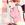

| B s . A A A | full 3/4 1/2 | E E | Light Dark |
|

Istoria
Author of 25 Stories |
STOP! READ THIS FIRST!
Okay... I don't know who did and because I never will, this is the only place that I can state my peace and feel like I've done something about what happened.
Thank you. Thank you SO much. A couple of days ago I got a message from the Ranma FanFiction awards telling me I had won second place in the continuing series. There's like about ten minutes of complete disbelief before I'm so incredibly happy and proud.
I wanted to thank everyone who voted but I can't do it individually so I'll thank you now. Thanks for reading the fic and actually voting for it. I never hoped for anything like that to happen. In fact, I'm surprised that so many of you are still reading this fic after so long. I've always just written for the sheer joy of doing it and the hope that other people might get some amusement out of it.
So anyway... go on and read the story, I know it's what you're really here for. And thanks to Another Duck again for being my guinea... ah, beta reader ^_^ again.
Act 5, Quest 2: Rescue on Mt. ArreatAkane's hands dug into the fresh snow, looking for anything recognizable. Each moment was torture, as if the next body part she came across would suddenly be Ukyo's. The snow was melting around her, the power of Warmth slowly overpowering the cold. But even as the ground was slowly revealed, it became painful obvious that Ukyo was nowhere in sight.
Akane stopped digging and felt herself sniffle. Ukyo was not her best friend and her only real rival for Ranma (if Akane forced herself to think of herself in contention for him). But… but lately, it seemed that Ukyo had been pulling them all together as group even when they were all fighting to stay apart.
First Mousse, now Ukyo. It seemed like the people who kept this group together were the first ones to get lost. Akane's eyes began to well up.
"Akane?" Ranma asked kneeling back at her.
"I don't want it anymore," Akane said suddenly. Shampoo and Ryoga stopped, turning to face her.
"Don't want what?"
"I don't want Fire Mastery," she said. "Ever since I got it, I've been messing things up." She turned to face Shampoo. "I'm sorry, I shouldn't have yelled at you. And I didn't listen to you," she looking at Ranma. "It makes me think I'm so strong but… but all I'm doing is hurting people."
"Akane no hurt anyone," Shampoo said impassively.
"But I started the fight," Akane said. "And Ukyo tried to stop us but…but none of us listened to her. And now she's gone. Just like Mousse."
"Don't be surprised," Ryoga said suddenly. "That's the way things work."
"What are you talking about?" Ranma said, turning over to the face the dour man.
"In a war like this, everyone pretty much dies." He paused, suddenly looking a bit sad. "Ukyo was just following that path."
Akane sob caught in her throat and Shampoo was looking coldly at Ryoga. But before either of them could say anything, Ranma was heading towards him.
"Look, I know that you've had it rough the past couple of days," Ranma said, walking towards Ryoga, "but there's no reason to say things like that."
"Why not?" Ryoga responded. "It's the truth."
"Ukyo's not dead," Ranma said firmly.
"Why would you care?" Ryoga replied. "It's not like you ever wanted her around. You were the one that abandoned her when she was a kid, right?"
"I didn't abandon her!" Ranma snapped. "That was all my father's doing."
"Right… always blaming your pop. It must be nice to have a scapegoat like that."
"Let it go, man. You're going to push me to far."
Ryoga looked at him with an angry eye. "Really? What happens when I push you too far?"
Ranma glowered at him and shifted his feet in the snow.
"You're going to fight me?" Ryoga said.
"If that's what it takes to beat some sense into your head."
Ryoga pulled out his axe and threw it to the ground, tossing his armor next to it. Ranma frowned and followed suit. Akane was about to stand up to put herself between them but Shampoo grabbed her.
"What are you doing?" Akane cried, "they'll kill each other!"
"This fight long time coming," Shampoo said softly.
"But…"
Akane paused. The months of journeying played back through her mind. Ranma and Ryoga always bickered and tried to out do each other. But Akane never thought that would ever come to serious fighting. It was more like friendly rivalry.
Looking at them now, anger dancing in their eyes, Akane was forced to wonder if maybe it hadn't been friendly at all. If maybe it wasn't just anger in their eyes. But hate.
The cold wind hit Genma like a ton of bricks. His hands clenched at the stony grips as he tried to pull his body over the top of the ledge. Finally reaching the plateau, he collapsed into the snow. Pushing off the ground, he looked around the area and found it completely devoid of anything but snow. Nothing grew here; nothing moved. The master Druid was right. This would be the perfect place to clear his mind.
He stumbled across the snow, finding a crack in the wall of the mountain and stumbling inside. The cave was still cold but offered some protection from the winter air. It would be enough for him to mediate without causing physical damage.
He noticed that the cave actually stretched far into the back. Cautiously, he walked down the path, wondering where it would lead. The paths were ice and Genma fought to maintain his balance. The cave wound it's way deep into the mountain and Genma was instantly on alert. This would be the perfect place for an ambush, he realized.
There was sound in front of him and Genma tensed up. But as he came closer, he realized that it was only the sound of water. The frozen river that ran through the mountain had thawed here and leaning down, Genma could see straight to the bottom. It was completely pure.
There was movement to his right and Genma spun around, gripping his staff to prepare for his first spell. What he saw quickly abated his battle lust. Slowly, he took a few steps forward, reaching out a hand to touch what he could only pray was an apparition. But his hand made contact and Genma realized with horror that it was real. Worse than that, he realized that this was not the only one.
Stretching around the frozen river and into the deep recesses of the cavern paths, a long line of crosses, each adorned with the body of a barbarian, both male and female. His stomach clenched as his mind realized the immensity of the atrocity before him. He mind swam and he may have passed out but he had suddenly caught sight of one of the crosses.
Walking over, he came face to face with the woman tied there. Her face was covered with blood, her long black hair matted down to the skull. The eyes were closed, as if she was simply asleep. But the stains on her clothes and the open wounds that no longer bled made it clear that she was not sleeping. She was dead.
Carefully, he cut down the body and brought it into his arms, slowly kneeling on the ground. With a slow movement, he touched the dead woman's face. As soon as his hand had passed her chin, it clenched in rage.
The demons that were assembling behind him were about to feel the full strength of a master Druid.
Ryoga stumbled backwards, choking slightly on the blood that was filling his mouth. The air around him became slightly misty as he breathed heavily.
"Had enough?" Ranma asked.
Ryoga laughed slightly. "Not even close."
He lunged forward sending a fist and a heel straight at his opponent. Ranma dodged with a spin and came around his back ready to throw a devastating punch at his back. But Ryoga was gone before the punch even cleared Ranma's side and managed to deliver a strong punch to Ranma's upper arm in the process.
"This can't be the right thing to do," Akane asked, looking over at Shampoo.
"Akane no understand. Fighters like Barbarian, Paladin, Amazon… all need fight to get out frustrations."
Akane looked over at the fighting pair with a frown. "I don't understand it."
"No, Sorceress no understand. So no like us."
"That doesn't mean that your way is the right one."
"Is right one for us," Shampoo said with a shrug. "Akane think they listen if she say different?"
Akane's hands clenched. If only Mousse or Ukyo were here. Mousse was always so smart, he'd think of a way to stop them. And Ukyo would jump in and stop them, make them see what was wrong.
What good was all the fire power in the world now? She could use it to decimate legions of the undead, call upon it to help her against the demons. But now, when two of her friends were about to kill each other, she couldn't do a thing.
She looked over at Shampoo but the amazon's face was impassive and her eyes stared at the scene unfolding in front of her. Shampoo wouldn't do anything. If anyone was going to do something… it would have to be her.
The animal scream rang through the caverns, causing icicles to shake and break free from the wall. The demons hesitated for a moment, sensing their own pointless demise if they dared to continue.
The Werewolf raged from his spot, howling into the sky as a rapid succession of spells encompassed him. Fury welled up and turned the air red. Five ravens circled above him in the air. Two large grizzly bears stood at his side and a huge vine was growing up of the ground, slowly looping its way around them all.
The demons fell back just as the animals attacked. The sound of tearing flesh filled the caverns quickly replacing the Werewolf's battle cry. The air became thick with the smell of death as the ambush team was destroyed in seconds.
And then just as quickly as it began, it was over. The enemies were defeated and the summoned monsters flickered out of existence. The Werewolf raged once more before the fur began to disappear and humanity returned to the druid.
Genma closed his eyes and cleared his mind. Ironically, it turned out that this was exactly what the master Druid had ordered him to do. His mind was cleared of all questions and doubt. The path was clear.
Leaning down, he carefully wrapped the body at his feet in his cloak and threw it over his shoulder. He began to walk back to the entrance of the cave and paused looking back at the crucifixes behind him. He knew why they were keeping the bodies in here. Food for the demons. He wouldn't all that indignity befall the bodies of these fallen heroes. He brought up his hand, lips moving as he cast the most powerful spell he knew.
Armageddon exploded in the cave, meteorites scattering across the cavern from the eruption in the air. They tore through everything in their path, leaving only charred remains in their path.
Those remains caught fire and began burning. Suddenly the cavern began to melt, slowly feeding the thawing river. The cavern filled with water, rushing down through all the passageways, cleaning up any signs of destruction there and purifying the mountain once more.
But by then, Genma had already returned to Harrogath.
"STOP IT!" Akane suddenly screamed, watching Ryoga land a blow in Ranma's stomach. Ranma's knee buckled but he still managed to kick upwards, landing a satisfying hit to Ryoga's stomach.
Akane ran forward and pushed between them. "Stop it… please," she said softly. "This is why Ukyo left. She ran away because we were all fighting. If she's here… if she's in this field somewhere…" Akane paused and looked at them.
"What would it have been for?" Akane cried looking at them. "If you keep fighting, then her sacrifice meant nothing! I don't care if you think this is the only way to solve your problems! You can't just kill each other. That's not the right solution, it's just the easy way out.
"First Mousse, now Ukyo… they all sacrificed themselves for us, so that we could keep going. And now we're going to toss that aside?" She looked over at Shampoo, seeing the purple-haired Amazon looking at her sadly.
"Mousse is still alive, we owe him the chance of redemption by defeating this army. And Ukyo… Ukyo could still be…"
There was crunching on the snow and the group turned. A barbarian stood there, clearly out of breath.
"You need to get back to Harrogath," he managed to get out. "Genma-san found… he found…"
But before he could even finish, the group was already running back towards Harrogath.
In the middle of the war torn town, a wooden table sat onto of a pile of chopped trees. A body lay on the table, draped in a white blanket. In front of it, the master Paladin was chanting prayers.
The small group assembled there turned, watching as the group of heroes suddenly arrived. No one said a word but stood silently as they caught their breath, slowly taking in the situation.
Akane dropped to the ground first, clutching her sides as she began to cry. Shampoo turned away, unwilling to let anyone see the grief that clutched her. Ryoga's face was set in stone though his eyes were reflecting a sea of emotions. Ranma locked eyes with his father, seeing the way the older man stared at the table. Genma looked up at Ranma and he suddenly realized what was going on.
"It's not Ukyo," Ranma said suddenly.
The group looked up at him with surprise. No one contended the statement. Suddenly a wave of relief hit the group. It wasn't her! Ukyo could still be alive!
"It's not," Genma said, confirming their suspicions. "But…" He reached a hand forward and placed it on the figure in front of him.
Akane felt it first, that crushing feeling of guilt that she took some joy in someone else's death because it wasn't who she thought it was. But watching the silent conversation between Ranma and his father, Akane suddenly realized that he knew who it was.
"Ranma," she said softly, standing up and taking his hand in her own. "I'm so sorry."
But Ranma didn't make a sound. He just watched the ritual proceed, staring into the burning fire that took away the mother he never had the chance to know.
Hours later, in the quiet of the night, Harrogath seemed to be at peace once more. The smell of smoke still lingered but would be gone by morning. Five figures remained around the small pile of ash, trying to find the words.
So many months had passed, so many tragedies had befallen them. Somehow the funeral pyre had reminded them of all that. Akane had seen Tristram burn once more. Shampoo had felt the searing pain of a blow that should have ended her life but instead forced Mousse to sacrifice his. And Ryoga saw all the bodies of his fallen comrades in that one pyre.
Worse than all that was the realization that it really could have been Ukyo. That her actions had led to her death because the rest of them were too caught up in their own problems to realize the group was falling apart. That she had committed the ultimate sacrifice to try to bring them together.
And in that realization came the reminder that they were all the same. Yes, they were different in class, different in background, but similar in so many other ways. They were comrades in arms, friends and had shared tragedies together before.
Wordlessly, they reached an agreement. Akane had been right. Too many people had sacrificed themselves to give the rest a chance to fight on. It was time to end the arguments and enter the final battle.
Genma stood up first. "The demons are using the barbarians for food. I'd bet that they kept a few pens of live ones."
Ryoga stood up and readjusted his armor. "It'll be further in from the Overseer's location. Nothing is left there now."
"Let's go then," Ranma said, turning away, Akane following quickly behind.
As soon as they were gone, the ash on the ground shifted and caught itself in the air, slowly dancing in the sky before disappearing amid the stars. A dim light shown over the spent pyre and a few white feathers fell onto it.
"Was it really necessary?"
Nodoka Saotome feet touched the ground and her wings folded behind her. She looked up at her fellow angel with a small smile. "It was the only way. Tragedy will bring them together again. It's why Aiko sent her own daughter out as a sacrifice."
"Yes… but shouldn't you have told them what happened after you died."
Nodoka looked over at her friend with a smile. "Well, I can't say I didn't want my husband to suffer just a bit for taking my son away from me."
"That's not very angel like."
"I guess you've being doing this long then I have, Tendo-san," Nodoka replied. She paused. "Your daughter is beautiful and strong. I'm glad Genma finally made a good decision." Nodoka looked up at the sky. "Shall we go then?"
Her wings unfurled and she pushed off the ground, the action scattering the last of the ashes away to the wind.
Shampoo pulled back the bowstring and waited for Ranma's signal. She looked over at the pen, watching the barbarians milling about. Wearily she looked to her left, watching Ryoga's growing anger.
They were alive, he realized. They were still more people left alive! But trapped, like swine to be used for food. Despair was suddenly being replaced by rage.
"Ryoga?" Shampoo asked. "Remember plan, right?" And despite the overpowering anger, Ryoga nodded and waited for the signal as well.
There was a flash of light as Ranma cast Holy Bolt. The scream next to her momentarily stunned Shampoo. But she pulled herself out of it and began to fire her arrows. She knew what that was… it was War Cry, a master level Barbarian skill.
And it had just taken out a whole mess of demons. They wobbled around, stunned but alive. That was quickly taken care of when Ryoga suddenly went into a Berserker rage and began to decimate them with Whirlwind.
The display of mastery didn't affect Shampoo though. She just concentrated on firing her arrows, one after another until the space between them disappeared and ten arrows flying out a time were being shot at once. In her determination, she was casting Strafe without knowing it.
And then suddenly… there were no creatures left to fight. The barbarians in the pen were cheering as Ryoga walked over and quickly made short work of the lock. Akane walked over and cast a town portal spell, motioning them through. Ranma talked to a few of them, learning that there were other pens around the area.
But as the pen emptied out, something suddenly struck Ryoga. In the back, hidden among his taller comrades was someone… someone very familiar.
As soon as he caught Ryoga's eye, the smaller man smiled. "You've been lost for quite some time. But I figured you'd find your way here in the nick of time."
"Andreas! You're alive!" Ryoga said crushing the other man in joy. He let go and then threw a few slaps on his back.
"Not for long at this rate," Andreas replied, trying to recover from the greeting.
"Have you seen anyone else?"
Andreas nodded. "There were a lot of people. But they just broke up one of the pens, moved us all around."
"…brown hair? Sure I've seen her," one of the barbarians was saying. "Kind of hard to miss since she was the only girl."
Ryoga's head snapped around and caught Ranma's eye. The paladin nodded. It was Ukyo and she was still alive.
Ryoga turned back to Andreas but the little barbarian was next to the portal. "Try not to get lost this time. I'll see you back home where I have two swords that are just itching to get embedded in demon skin."
Ukyo frowned at the lock on the gate and then at the guards at the door. She was still tired from the forced march to this new pen but she should have been glad that she was alive. Too many of her penmates had not moved but rather were sent into one of the portals of Hell.
In fact, she would have been glad, if she didn't know the reason they were keeping her alive. Killing the Overseer apparently meant that normal demon food was not good enough of a punishment. She was going to get the joy of meeting the head demon himself.
Good, she had told her captors. I'll make sure to tell him exactly how we killed his two brothers.
Which turned out not to be the smartest thing to say, she thought, lightly touching her mangled side. Alive apparently did not include unharmed. The barbarians had helped her, though, bandaged her side and helping her stay up during the march.
That's why she was determined to get them out. Even though her fate was pretty much sealed, she wasn't going to let them turn up as demon food. But that lock was more then she could handle. Playing sick probably didn't matter much to the guards. And well… they were the undead so appealing to their sexuality wasn't going to work either.
Ukyo sighed and leaned against the side of the wall. She shouldn't even be alive to have to worry about this. But leave it her luck to not get killed with the Overseer. Now, she actually had time to worry.
She worried about the barbarians, of course. But she worried more about her comrades. Did they even know she was alive? Did they even care? She could only hope that what she had done had given them the chance to keep fighting.
Suddenly there was an explosion and Ukyo heard a battle cry. The area outside of the pen erupted into a sea of fire, arrows and axes. Ukyo pressed against the grate, looking out as the demon forces were slowly decimated. And then the smoke began to clear and there were people walking towards them. The barbarians were cheering and Ukyo found herself biting her lip to keep the emotions in.
Ryoga walked up, axe in hand and looked at her angrily. "Do you remember in Hell, when I said when someone is in trouble, we don't just sit around and cry about it. That we figured out how to help them and then we helped them."
Ukyo nodded slightly. "Of course… it's why… it's the only thing…"
"Sacrificing yourself is not following that advice," he interrupted, smashing the lock with his axe. "It didn't help us at all, so never try it again."
Ukyo smiled slightly, knowing he was lying. Akane and Shampoo suddenly enveloped her in a hug. She tried not to protest too much as she felt the crunching of her broken ribs but they seemed to sense the injury and loosened their grips a bit.
She looked over at Ranma. "What Ryoga said," he managed to get out, before joining the group hug. "Come on Ryoga… join the love."
"Shut up, Ranma," Ryoga said before Akane grabbed his arm and pulled him to the group.
"We're together again," she said with a smile. "We're back as a group."
"Will stay that way," Shampoo said firmly. "No more fighting with friends," she said to Ranma and he nodded slowly.
"No more not working as a group," Akane said.
"No more bad grammar!" Ranma said with a smile that earned him a scowl from Akane.
"Baka!" Akane said. "Like you even know what grammar is."
"Hey," Ukyo said suddenly. "No more nosebleeds!" she said looking at Ryoga. And the little gears in Ryoga's head turned and calculated that this time there were three beautiful half-dressed women clutching him.
"Crap," he said, stepping backwards to gain his balance as his nose began to ache. The group laughed.
"I'm glad to see we're back together," Genma said rejoining them. "I found the next pen. It's about three kilometers to the north. If we're lucky, we can still catch them by surprise."
"Good," Ranma said. "Ukyo, go back to town to get healed. Shampoo, scout ahead, give us a count on demons. Akane, we'll need you to cast some fire walls from the back and re-enchant the weapons. Ryoga… dude, just do the whole blender routine and we'll be fine. Wait for my signal and we'll attack. Okay?"
The group nodded and Akane stuck his hand out. Ukyo's quickly followed suit, then Shampoo, Ryoga, and Genma. Ranma looked at them with a smile before putting his hand of top.
No more questions. They were going to fight as a group. And they were going to win.

|
Review this Chapter |